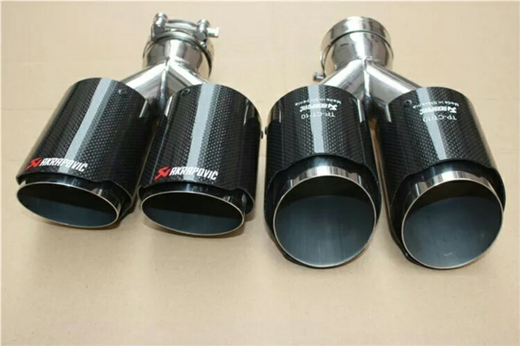
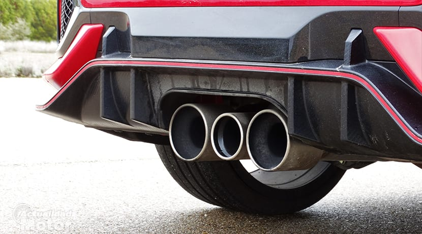
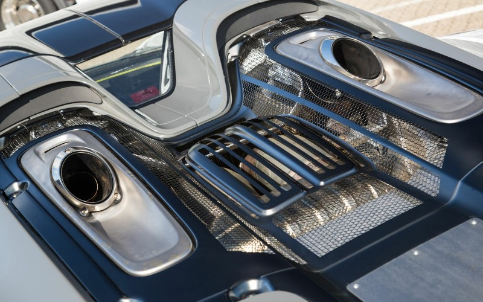

Sistemas de Escape
Sabemos que te indignas cuando estás parado en un semáforo y una maldita 49 suena más fuerte y mejor que tu "coche"
y si es eléctrico, no estamos hablando de un coche, sino de un electrodoméstico. Nuestro cliente más satisfecho, el
señor Guille, vino con su Xsara Picasso a ponerle un cañonazo de Akrapovic, el catalizador le reventó en menos de dos
días, pero Guille afirma que fueron los mejores dos días de su vida. Que en paz descanse el catalizador del señor G.
*** DEBIDO A LA PÉRDIDA DEL MSI DE ÁLVARO, TENEMOS UN DESCUENTO DE UN 10% PARA TODOS LOS CLIENTES QUE SE LLAMEN ÁLVARO. PARA RECIBIR TU DESCUENTO, SOLAMENTE DEBERÁS ACREDITAR TU NOMBRE CON EL DNI
ECHA UN VISTAZO A NUESTROS PRODUCTOS



 PETARDAZO AKRAPOVIC FT. GUILLE
Este es el mismísimo escape que el señor Guille le metió al Xsara, legendario
escape, Akrapovic, firma fiable de escapes, potencia y sonido a partes iguales
para volar con él.
PETARDAZO AKRAPOVIC FT. GUILLE
Este es el mismísimo escape que el señor Guille le metió al Xsara, legendario
escape, Akrapovic, firma fiable de escapes, potencia y sonido a partes iguales
para volar con él.
145€
PACK 2(+1 EMB) SPORT PLUS
Poco que decir sobre este escape en realidad, sin más, es lo que veis en pantalla
un escape normalito, con dos tubos reales y un embellecedor, que obviamente no hace
nada, ni siquiera se mancha de carbonilla, pero queda bonito y de esta forma tu novia
y amigos que no tengan ni idea sobre coches, quedarán asombrados.
183,99€
918 SPYDER EXHAUST SYSTEM
Este es el artículo más bonito y único de la parte de los escapes, hablamos del mítico
y archiconocido escape del porsche 918, un escape que está colocado a la espalda. Es simplemente
una maravilla, una preciosidad.
670,99€
GR COROLLA EXHAUST (2+1)
Con la presentanción del nuevo GR-Corolla, medio mundo de la automoción ha mostrado
su amor por este escape, escape diferente, nuevo, fresco, japonés y raro, sin más
preámbulos. Por eso, lo tenemos en nuestra web, para que cualquier usuario pueda
disfrutar de él.
320€